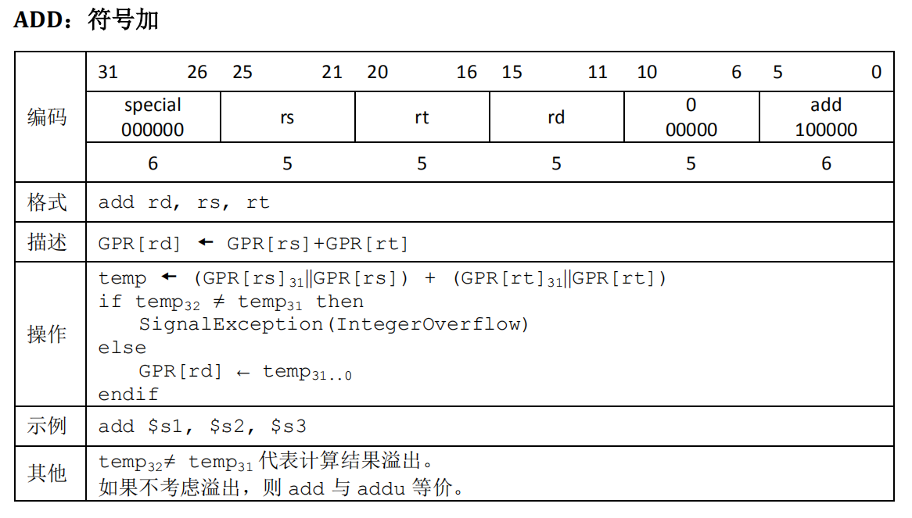
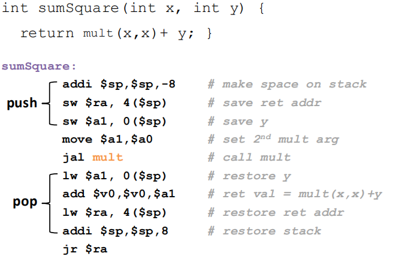
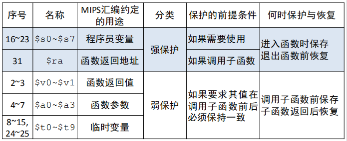
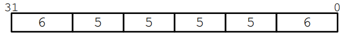
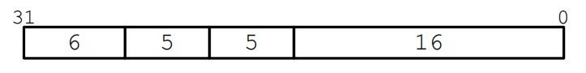
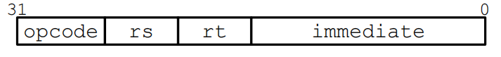
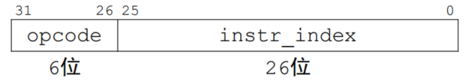
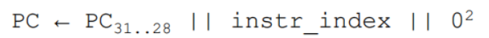
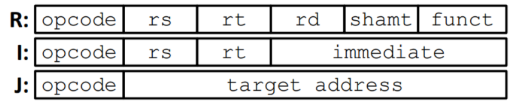

MIPS架构（RISC）
CPU执行程序的过程
- 读取指令
- 分析指令
- 执行指令
RISC的设计思想：
CPU越简单则性能越高，即目标为减少指令数量， 去除复杂指令
- 加速大概率事件
- 简单意味着更容易设计、电路频率更高
-
简单功能由硬件实现；复杂功能（由大量小功能组成）交给软件处理（复杂功能是小概率的）
RISC的设计策略
- 指令定长：所有指令都占用32位（1个字）
降低了从存储器中读取指令的复杂度 - 简化指令寻址模式：以基地址+偏移为主
降低了从主存中读取操作数的复杂度 - ISA的指令不仅数量少，而且简单
降低了指令执行的复杂度 - 只有load与store两类指令能够访存
例如，不允许寄存器+存储器或存储器+存储器 - 把复杂留给编译
编译器将高层语言复杂语句转换为若干简单的汇编指令
MIPS的寄存器
MIPS共有32个一般寄存器（标号为$0 ~ $31),不区别正负。还有pc、hi、lo等特殊寄存器
| 寄存器名 | 序号 | 作用 |
|---|---|---|
| $zero | 0 | 储存常量0，不支持修改 |
| $v0 ~ $v1 | 2~3 | 函数返回值 |
| $a0 ~ $a3 | 4~7 | 函数参数 |
| $t0 ~ $t9 | 8~15, 24~25 | 临时变量 |
| $s0 ~ $s7 | 16~23 | 程序员变量（全局变量） |
| $k0 ~ $k1 | 26~27 | 操作系统使用 |
| $gp | 28 | 在生成复杂的存储布局时使用（属于编译范畴） |
| $sp | 29 | 栈顶指针 |
| $fp | 30 | 在生成复杂的存储布局时使用（属于编译范畴） |
| $ra | 31 | 函数返回值 |
| pc | 无 | 程序计数器（冯诺依曼计算机） |
| hi | 无 | 储存乘法运算结果的高32位和除法运算的余数 |
| lo | 无 | 储存乘法运算结果的低32位和除法运算的商 |
MIPS中主存地址的表示和主存数据的存储
地址表示方式：
- 绝对地址
主存单元的地址直接用具体的数值来表示 - 相对地址
采用“基地址+偏移”的方式，优点如下- 一致性：与数据结构的访问方式高度一致
- 统一性：可以用某个固定base与不同的offset计算得到任意地址
- 灵活性： 不同的{base,offset}组合可以对应同一个地址，为软件编程带来很大的灵活性
指令存储方式：
- 大端存储：最高有效字节在字内的最低地址
- 小端存储：最高有效字节在字内的最高地址
MIPS的指令集（按功能分类）
加载指令
lb, lbu, lh, lhu, lw保存指令
sb, sh, swR-R运算指令
add, addu, sub, subu, mult, multu, div, divu
slt, sltu
sll, srl, sra, sllv, srlv, srav
and, or, xor, norR-I运算指令
addi, addiu, andi, ori, xori, lui
slti, sltiu分支指令
beq, bne, blez, bltz, bgez, bgtz跳转指令
j, jal, jr, jalr传输指令
mfhi, mflo, mthi, mflo特权指令
eret(异常返回)， mfc0(读CP0寄存器)， mtc0(写CP0寄存器)陷阱指令
break(断点异常)， syscall(系统调用异常)tips1: MIPS指令判断溢出的方法
- 以add指令为例：

tips2: LO和HI寄存器中保存的值
- 在乘法指令中， LO保存运算结果的低32位，HI保存运算结果的高32位；
- 在除法指令中， LO保存商，HI保存余数；
tips3: MIPS指令中“u”的含义
signed 和 unsigned 有三种不同的含义
- 符号位扩展
- lb, lh 符号扩展
- lbu, lhu 零扩展
- 溢出检测
- add, addi, sub, mult, div 检测溢出
- addu, addiu, subu, multu, divu 不检测溢出
- 比较对象的符号性
- slt, slti 和符号数比较
- sltu, sltiu 和无符号数比较
### 伪指令
-
为了使程序更可读更易编写，MIPS定义了一组伪指令，例如常用的move,la,li等等。
- 伪指令并不是真正的指令， 在汇编时汇编器会将其转化为实际指令
例如move dst, src会被转化为addi dst, src, 0
-
伪指令通常会转化为多条真实指令，因此这组真实指令之间必须通过某个寄存器（$at）来传递信息。因此$at为汇编器专属寄存器，不能被程序员修改（约定）。
MIPS中函数的实现
函数实现的步骤
- 调用者把参数放置在某个地方以便函数能访问（
$a0,$a1,$a2,$a3） - 调用者转移控制给被调用的函数(
jal指令) - 函数获取局部变量对应的空间(通过桟操作)
- 函数执行具体功能
- 函数把返回值放置在某个地方，然后恢复使用的资源(
v0,v1) - 返回控制给调用者(
jr指令)
函数相关的寄存器
- $a0 ~ $a3：4个传递参数的寄存器
- $v0 ~ $v1：2个传递返回值的寄存器
- $ra：返回地址寄存器，保存着调用者的地址用到的寄存器
保存和恢复寄存器
- 因为寄存器数量较少，因此需要桟将寄存器中的数据保存在内存中，防止调用函数的过程中某些需要保存的值被覆盖。此时我们需要对保存栈顶地址的寄存器
$sp进行操作：申请桟帧->储存寄存器的值->调用函数->将桟中的值返回寄存器->释放桟帧
 - 根据寄存器受保护的程度,可以将寄存器分为强保护和弱保护

注意，强保护寄存器为被调用者保存（进入函数时保存，退出函数前恢复）；弱保护寄存器由调用者保存（调用子函数前保存，子函数返回后恢复）。
MIPS指令格式
MIPS指令的32位被划分为若干个域，代表特定含义，每一个域在不同指令的含义大体是相同的。
### R型指令
域的分块

域的命名

| 域名 | 含义 |
|---|---|
| opcode | 代表指令的操作，R型指令的opcode固定为0b000000 |
| funct | 与opcode指令配合，精确定义指令的具体操作，主要用于服务R型指令 |
| rs | 指定第一个操作数（source寄存器） |
| rt | 指定第二个操作数（target寄存器） |
| rd | 指定结果回写的寄存器（destination寄存器） |
| shamt | 移位指令（sll， sra， srl）中的移位位数，其他指令中该域固定为0 |
注意：
- nop是一条特殊指令（0x00000000），
对应的指令为sll $0, $0, 0,主要用于解决流水线冲突。
I型指令
域的分块

域的命名

|域名|含义|
|--|--|
|opcode|代表指令的操作，
I型中opcode为非零编码，一共可以编码64条指令|
|rs|指定第一个操作数（source操作数）|
|rt|指定第二个操作数（target操作数）|
|immediate|表示16位立即数|
注意：
-
立即数（immediate）分为有符号立即数和无符号立即数
- 无符号立即数的指令包括：位运算指令(and, or,
nor等)和小于置位指令（slti等）
zero_ext()：运算前需要进行无符号扩展
- 有符号立即数的指令包括：分支指令（如beq，
bne等），访存指令（lw， sw等）
sign_ext()：运算前需要进行符号扩展
- 如何计算32位立即数？
- 解决方案：结合使用lui和ori两个指令
- 例如伪指令addi $t0, $t0, 0xABABCDCD
可以转化为以下三条指令
lui $at,0xABAB # 高16位
ori $at,$at,0xCDCD # 低16位
add $t0,$t0,$at # 赋值- 关于跳转指令（B类指令）的跳转范围
- 指令都是32位长，且指令是字对齐，这意味着最低2位恒为0。因此immediate没有必要记录最低2位，乘以4后就得到了对应字节地址！immediate为16位符号数，其表示范围是正负±\(2^15\)
- 如果跳转的目的地址超过了\(2^15\)条指令可以将
beq $s0, $0, far改写为bne $s0, $0, next
j far
next: #next instruction### J型指令
域的分块和命名

PC地址的计算方法

由于PC的值始终是4的倍数，因此最后两位都是零，没有必要存储；PC的高四位来自当前指令的高四位，意味着目的地址与当前指令必在同一区段 {X000_0000，XFFF_FFFF},因此
j指令的跳转范围是256MB，只有jr指令（R型）才可以跳转到4GB内的任意地址。### 指令格式总结
- 三类指令格式对比

- B类指令(I型)使用PC相对寻址，J指令(J型)使用绝对地址寻址